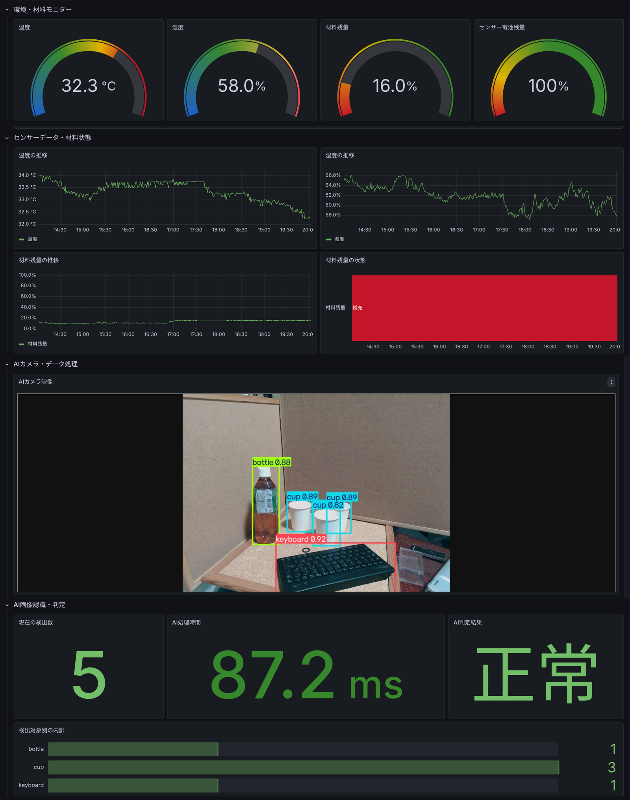
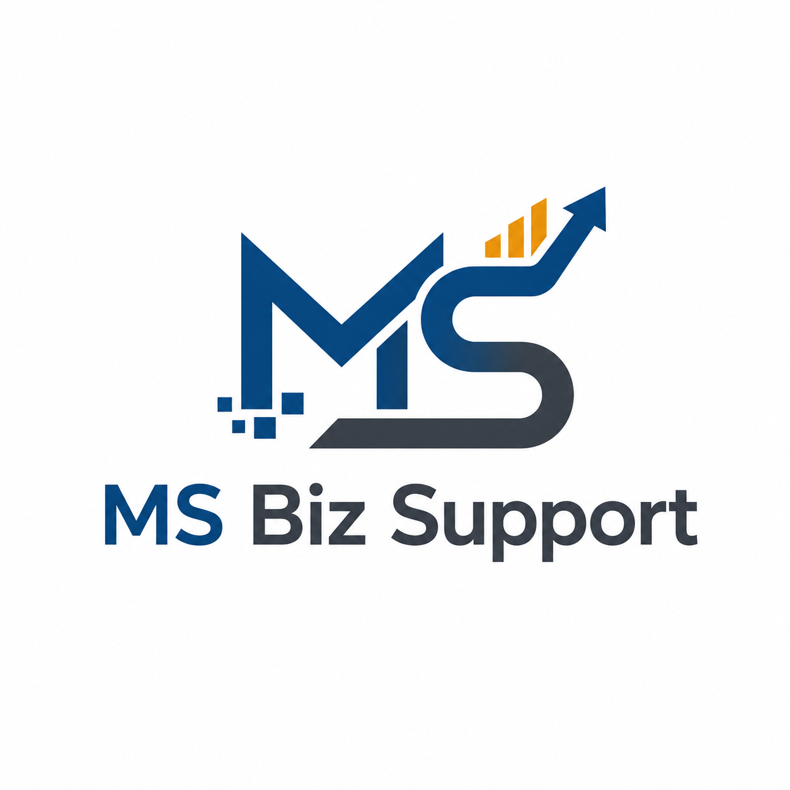

今ある設備・システムを生かして、
現場に残る「最後の手作業」を仕組みに変えます。
業務ソフトウェア、設備、センサー、カメラなど、今ある環境をできるだけ生かしながら、データ取得・判定・通知・表示・自動化を、お客様の業務に合わせて組み合わせます。
準備資料は不要です。今の仕事の流れを見せていただくところから始めます。
こんな「最後の手作業」が残っていませんか？
大きなシステム更新ではなく、日々の小さな手間から改善できることがあります。
同じ内容を何度も入力
一覧表から業務ソフトへ転記するなど、繰り返し操作が残っている。
現場を見に行かないと分からない
温度、残量、設備状態、物の個数などを人が確認している。
異常を見つけてから連絡
基準値超過や不足を人が判断し、電話やメッセージで知らせている。
情報が別々の場所にある
業務ソフト、メール、写真、設備の情報がつながっていない。
決まった製品を売るのではなく、
お客様の現場に合う仕組みに最適化します。
市販機器や共通技術を活用し、すべてを一から作るのではなく、現場ごとに違う部分だけを調整します。
今ある環境を生かす
既存設備や業務ソフトをできるだけ残し、必要な部分を後付けします。
必要なところだけ調整
共通部品を使いながら、判定条件や通知、表示など現場差分を作り込みます。
小さく試して確認
対象を絞った試作で、効果と使い勝手を見てから範囲を広げます。
最適化するのは、大きく2つです
「入力・処理・通知」と「表示」を分けて考え、必要な組み合わせを選びます。
入力・処理・通知を現場に合わせて最適化
何を取得し、どう判断し、異常時に何を動かすかを業務に合わせて構成します。
- 温度・湿度・距離・残量・電流など、必要な測定項目へ拡張
- AI画像認識は、学習した対象の種類・個数などを検出
表示を利用者と目的に合わせて最適化
同じデータでも、誰が何を判断するかに合わせて画面を組み替えます。
- 基準値に応じた色分けで、注意・異常を直感的に表示
- パネルの配置・サイズ・グループを用途に合わせて変更
構想だけではなく、実際に作って動かしています
説明用に構築し、動作確認しているデモです。
既存の業務アプリを残したまま、入力作業を後付けで自動化
同じ5件の請求書登録を、手作業と自動処理で比較しています。

センサー・AI画像認識・判定・通知・表示を一つの仕組みに
市販センサー、自作センサー、カメラからデータを取得し、現在値・履歴・AI判定を画面で確認できます。
現場と事務の「つながっていない部分」を埋めます
事務作業の自動化
入力、転記、集計、ファイル整理、メール送信などの繰り返し作業を改善。
現場データの取得
既存メーター、温湿度、距離、ボタン、カメラなどから必要な情報を後付け。
見える化・通知
現在値と履歴を表示し、会社ごとの条件で判定。必要な相手や設備へ通知。
情報発信の整理
採用・信用・問い合わせにつながるよう、会社の仕事や強みをホームページ等で整理。
まず現場を見て、小さく試します
「導入する製品」を決める前に、今の仕事の流れを確認します。
30分ヒアリング
準備資料は不要。困っている作業を伺います。
現状確認・改善案
設備や業務ソフトを見て、残せるものと改善点を整理。
小規模試作
対象を絞って動くものを作り、効果と使い勝手を確認。
導入・必要なら拡張
効果を確認してから、必要な範囲へ段階的に広げます。
既存設備をできるだけ残す
入れ替えありきではなく、今ある環境を生かす方法から考えます。
AIは必要な部分だけ
確実なルールは通常プログラム、画像認識などAIが向く部分にAIを使います。
費用対効果を確認
投資回収の見込みが薄いものを、無理に導入することは勧めません。

画像処理・業務システム・現場改善の経験を、奄美の企業へ。
東京大学工学部計数工学科卒。メーカーで科学機器制御ソフト、画像処理・解析、医療システムSE、検査・事務業務の自動化などに従事してきました。
その後もExcel VBAによる物流業務支援や、工場向けのセンサーデータ可視化などを経験。現在は、奄美の会社ごとの具体的な困りごとを、小さな仕組みで解決する事業を進めています。
まずは30分、今の仕事の流れを見せてください。
解決方法を決めておく必要はありません。「ここが面倒」「毎日これを繰り返している」というところから一緒に整理します。